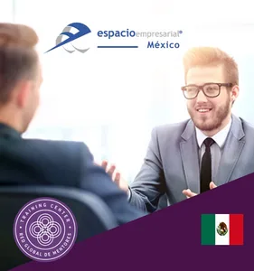
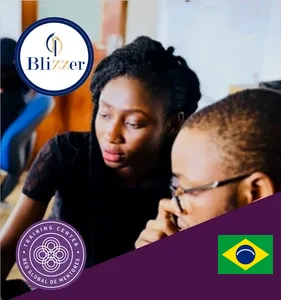

English Mentoring Academy
London, United Kingdom · English language
It is the body responsible for the doctrinal, academic and strategic development of the discipline. There are now more than 15 certified Training Centres in 13 countries, in three languages (Spanish, Portuguese and English).
Bodies authorised by Academia Global RGM to develop, represent and expand mentoring in a given language. Their mission is to drive the training, certification, research and professionalisation of mentoring, adapting international standards to the cultural and educational reality of each territory. They act as a link between Academia Global RGM, universities, training centres and the mentors of their region.
London, United Kingdom · English language

Madrid, Spain · Spanish language

Lisbon, Portugal · Portuguese language
Higher-education institutions that include mentoring in their offer, delivering official programmes developed or endorsed by Academia Global RGM through courses, specialisations, diplomas, master's degrees and academic training programmes, with scientific rigour, educational quality and institutional recognition.
Educational institutions that integrate mentoring into their own training programmes, combining it with other disciplines, methodologies or areas of specialisation. Their role is to spread, teach and apply mentoring in different contexts through blended programmes endorsed by Academia Global RGM.


Lima, Peru




Río de Janeiro, Brazil

Certified Teaching Mentors are the professionals qualified to practise mentoring in line with the academic, ethical and methodological standards of Academia Global RGM. They are the practical expression of the whole ecosystem, since they are the ones who pass on experience, judgement and applied wisdom to people, teams, organisations and communities.
Training Centres operating under a franchise format that allows them to deliver training with the programmes of the RGM Academy and then award international certifications.